Next: ระบบขนาน
Up: การหาค่าความน่าเชื่อถือโดยการจำลองแบบแจกแจงการทำงาน
Previous: การหาค่าความน่าเชื่อถือโดยการจำลองแบบแจกแจงการทำงาน
Contents
Index
ระบบอนุกรม
ระบบอนุกรมเป็นระบบที่ไม่มีการสำรอง หรือทำงานพร้อมกันหรือซ้อนกัน นั่นคือทุกโมดูลจะต้องทำงานได้ปกติ ระบบจึงจะสามารถทำงานได้ การนำเสนอระบบแบบอนุกรมสามารถทำโดยใช้แผนภาพกล่อง แสดงในรูป 10.3 ที่แสดงกระแสของการทำงานของระบบจากอินพุทไปยังเอาท์พุทของระบบ ในระบบแบบอนุกรม ถ้าโมดูลหนึ่งโมดูลใดเสียหาย กระแสการทำงานระหว่างอินพุทไปยังเอาท์พุทของระบบจะขาดจากกัน ทำให้ระบบไม่สามารถทำงานได้
Figure 10.3:
แผนภาพกล่องของระบบอนุกรม
|
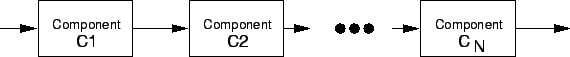
|
ในรูป 10.3 เป็นแผนภาพกล่องของระบบอนุกรมที่ประกอบด้วย  โมดูล ทุกๆโมดูลใน โมดูลจะต้องทำงานอย่างถูกต้อง ความน่าเชื่อถือของระบบคือความน่าจะเป็นที่โมดูลไม่มีการเสียหาย ให้ 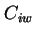 เป็นเหตุการณ์ที่โมดูล 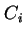 สามารถทำงานได้อย่างถูกต้องที่เวลา 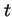 และ 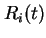 เป็นค่าความน่าเชื่อถือของโมดูล ที่เวลา ค่าความน่าเชื่อถือของระบบ คือค่าความน่าจะเป็นที่ทุกโมดูลสามารถทำงานได้ปกติ สามารถเขียนได้เป็น
โมดูล ทุกๆโมดูลใน โมดูลจะต้องทำงานอย่างถูกต้อง ความน่าเชื่อถือของระบบคือความน่าจะเป็นที่โมดูลไม่มีการเสียหาย ให้ 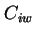 เป็นเหตุการณ์ที่โมดูล 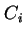 สามารถทำงานได้อย่างถูกต้องที่เวลา 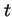 และ 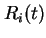 เป็นค่าความน่าเชื่อถือของโมดูล ที่เวลา ค่าความน่าเชื่อถือของระบบ คือค่าความน่าจะเป็นที่ทุกโมดูลสามารถทำงานได้ปกติ สามารถเขียนได้เป็น
สมมุติให้ทุกเหตุการณ์ ไม่มีความสัมพันธ์กันจะได้
หรือ
 |
(10.37) |
ถ้าทุกโมดูลมีอัตราการเสียหายเป็นไปตามกฎการเสียหาย Exponential ระบบประกอบด้วย โมดูล และแต่ละโมดูล 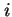 มีอัตราความเสียหายเท่ากับ  และ
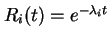 จะได้ค่าความน่าเชื่อถือของระบบเท่ากับ
และ
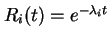 จะได้ค่าความน่าเชื่อถือของระบบเท่ากับ
หรือ
โดยที่
Vara Varavithya
2002-03-09